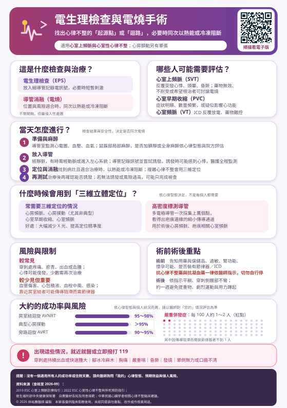

「先找出問題在哪裡，再決定要不要當場處理掉。」
這一頁說明心臟電生理檢查（EPS）與導管消融（電燒）是怎麼一回事，包括什麼情況會用到三維立體定位與高密度標測。
適用心室上頻脈與心室性心律不整；心房顫動請看心房顫動電燒手術那一份。
本頁有表格，在手機上若看不到完整欄位，請用手指在表格區域左右滑動即可看到全部內容。
心臟裡有一套自己的電線系統。心律不整，就是這套線路某個地方多了一條不該有的岔路，或是某一點自己搶著放電。問題是：從體表的心電圖，常常只能知道「有問題」，卻不知道問題確切在哪一個位置。
這就是電生理檢查要做的事——把偵測器直接放進心臟裡面量。
不一定。有三種情況會只完成檢查、不做電燒：當天誘發不出心律不整（找不到目標就無法精準治療）、病灶太靠近重要的傳導組織（例如房室結，硬做可能造成心跳過慢而需要裝節律器）、或當下評估風險高於預期效益。這時醫師會改用藥物，或另外安排治療。這不代表失敗，而是安全考量。
心室早期收縮與心室頻脈，常常是其他心臟疾病的表現，而不是單獨存在的問題。所以醫師通常會同時查有沒有心肌病變、冠狀動脈疾病或其他結構性心臟病。先把背後的原因找出來，治療方向才會正確。
若出現昏厥、持續胸痛、嚴重呼吸困難或意識不清，請立即就醫或撥打 119，不要等到下次回診。
在心導管室全程監測心電圖、血壓與血氧。消毒之後，通常在鼠蹊部做局部麻醉。是否要加上鎮靜或全身麻醉，依心律型態與院方評估決定——例如較單純的心室上頻脈，常在清醒或輕度鎮靜下即可完成；複雜的心室頻脈則可能需要更深的麻醉。
主要經靜脈（鼠蹊部的股靜脈）把導管送到心臟；依心律型態，有時需要經動脈，或進入左心系統。導管一邊記錄心臟各處的電訊號，一邊用微小電刺激嘗試把心律不整誘發出來——因為要抓到它發作，才知道它從哪裡來。
可能會感到心悸、心跳突然變快，就跟您平常發作時的感覺類似。這是預期中的步驟，醫護會全程監測心電圖與血壓，隨時可以中止。如果覺得不舒服，直接說出來，不用忍耐。
找到病灶、而且位置與風險都適合治療時，醫師會用射頻（熱能）或冷凍把異常訊號阻斷。有些較複雜的心律不整會使用三維立體定位來精準定位——這部分請看第 5 節。
治療後會再刺激一次，確認是否還能誘發出心律不整。若已經誘發不出來，代表達到預期目標。若仍可誘發，會視情況補做或調整策略。
這是很多病人會在同意書上看到、卻不知道是什麼的項目。用白話說：它就是幫心臟畫一張立體的「電路地圖」。
系統會利用磁場或電場，即時算出導管在心臟裡的三維位置，一邊移動導管、一邊把心腔的形狀建成一個立體模型，同時把每一點量到的電訊號用顏色標示先後順序——紅色代表訊號最早到達（通常就是起源點），藍紫色代表最晚。
| 心律不整型態 | 是否常用三維定位 | 原因 |
|---|---|---|
| AVNRT（房室結迴旋） | 不一定需要 | 位置固定在房室結附近，傳統透視加上少數導管多半就能完成。部分中心為了降低輻射仍會使用 |
| AVRT（旁路／WPW） | 視旁路位置 | 常見位置用傳統方式即可；位置刁鑽或多條旁路時使用 |
| 心房頻脈（AT） | 常需要 | 異常放電點可能在心房任何地方，必須靠標測找出最早激動點 |
| 心房撲動（AFL） | 常需要 | 典型撲動需確認阻斷線是否完整；非典型或開心手術後的撲動，迴路複雜，幾乎一定要用 |
| 心室早期收縮（PVC） | 常需要 | 要在心室中找出單一的起源點，範圍大、需要精準比對 |
| 心室頻脈（VT） | 幾乎必用 | 多與心肌疤痕有關，需要建立「基質地圖」找出疤痕之間的傳導通道 |
一般的標測導管，尖端只有幾個電極，要一點一點慢慢採。高密度標測導管則是把很多電極排成網格狀或多爪狀，一次就能採集到大量的點——整個標測可以累積上萬個資料點。
單純的心室上頻脈用傳統方式就有很高的成功率，加上高密度標測不會讓效果更好，卻會增加費用。反過來說，疤痕相關的心室頻脈若沒有足夠的標測解析度，可能找不到真正的通道而導致復發。
請直接問醫師：「我的情況需要用到這個嗎？為什麼？」這也是簽自費同意書前最該釐清的一題（見第 10 節）。
有。依心律型態與症狀，可以選擇觀察、迷走神經刺激法、藥物或電燒。
| 做法 | 適合的情況 | 要知道的限制 |
|---|---|---|
| 觀察追蹤 | 發作少、症狀輕、心功能正常的 PVC 或 SVT | 需要定期追蹤，症狀變化時要回診 |
| 迷走神經刺激法 | 心室上頻脈的急性發作 | 第一次請由醫護指導；不要自己按壓頸動脈或壓眼球 |
| 藥物 | 不願意或暫時不適合電燒者 | 需長期服用、可能有副作用，減少發作但多半不能根治 |
| 導管電燒 | 反覆有症狀的 SVT，可作為主要治療選項 | 屬侵入性、有併發症風險；仍可能復發 |
沒有一個適用所有人的成功率或住院天數。同樣是「電燒」，房室結迴旋性頻脈與疤痕相關的心室頻脈，難度、風險與成功率差得非常遠。網路上看到的數字，不一定是您的數字。
請直接問醫師：「我的心律型態是什麼？預期效益多少？我個人的併發症風險有多高？」
| 項目 | 說明 |
|---|---|
| 穿刺處疼痛、瘀青、出血或血腫 | 最常見。通常壓迫與臥床即可改善，瘀青會慢慢退掉，少數需進一步處理 |
| 心悸復發 | 少數人會復發、需要再次治療。多發生在術後前幾個月 |
| 項目 | 說明 |
|---|---|
| 血管傷害 | 如假性動脈瘤、動靜脈廔管，必要時需加壓或手術修補 |
| 心包積液或心臟穿孔 | 少見但屬嚴重併發症，必要時需緊急引流 |
| 血栓與中風 | 術中會依情況使用抗凝血藥降低風險 |
| 感染 | 少見；術後傷口保持清潔乾燥可降低機會 |
| 房室傳導阻滯 | 病灶若靠近房室結，處理時可能傷到正常傳導路徑，少數人因此需要植入節律器。這也是有時會選擇「只做檢查、不做電燒」的原因 |
左心室或疤痕相關的心室頻脈，技術難度與風險通常都比心室上頻脈高。可能需要進入左心系統、手術時間較長，也較容易需要分次治療。這類病人術前的評估與討論會更完整。
以下為一般原則，實際請以執行醫院給您的個別指示為準。
抗心律不整藥、抗凝血藥、抗血小板藥、糖尿病藥是否暫停或調整，必須逐項由醫師確認。切勿自行停藥——自行停抗凝血藥可能造成中風，自行停心律藥可能讓心律不整惡化。
同時也不要自行提前停：有些抗心律不整藥反而需要停幾天才容易在術中誘發出心律不整，但停多久由醫師決定。
醫護會監測心律、血壓與穿刺處，並定期確認腳部的循環（顏色、溫度、脈搏）。平躺與下床的時間，依穿刺的血管、止血方式與用藥狀況而不同——有人幾小時，有人需要更久。
穿刺處持續出血或快速腫大｜腳冰冷、麻木｜胸痛｜嚴重喘｜昏厥｜發燒｜單側無力或口齒不清
這一節的目的不是告訴您「要花多少錢」——沒有人能事先用同一個金額概括——而是讓您知道簽名前該問清楚哪些事。
健保是否給付，取決於診斷、手術方式、材料品項與適應症四件事，不是「這個手術有沒有健保」這麼簡單。而且即使處置符合給付，仍可能有：
| 項目 | 說明 |
|---|---|
| 三維定位相關材料 | 包含定位用的貼片、特殊標測導管等。是否需要、用哪一種，依心律型態而定 |
| 高密度標測導管 | 多電極的特殊導管，通常用於複雜個案（見第 5 節） |
| 特殊電燒導管 | 例如具壓力感應功能的導管，屬自付差額品項 |
| 止血材料、血管縫合器 | 用於加速止血、縮短臥床時間 |
上面這些材料不是每位病人都用得到，也不能事先用同一個金額概括。單純的心室上頻脈可能完全用不到；複雜的疤痕相關心室頻脈可能需要好幾項。該用什麼，是依您的病灶決定的臨床判斷。
衛生福利部中央健康保險署有自費醫材比價資訊可以查詢，能看到各院所同一品項的收費。建議在回診討論前先查一下，比較有概念。
把這六題抄下來或拍照帶去，可以讓門診的討論更有效率。
本頁內容依下列指引與規範編寫，並針對台灣一般民眾的用語與就醫情境改寫（查核至 2026 年 9 月）：
本頁為一般衛教資訊，不能取代醫師對個別病情、術式及費用的說明。文中的成功率與風險為不同型態的一般範圍，不等於您個人的數字；實際的診斷、治療選擇與費用，請以您的主治醫師與執行醫院說明為準。
若出現昏厥、持續胸痛、嚴重呼吸困難或意識不清，請立即就醫或撥打 119。
